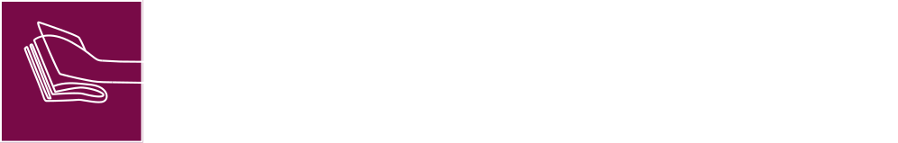
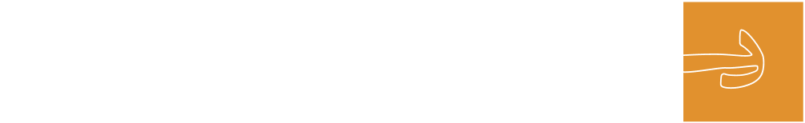

برنــــــامج المترجم المعتـــمد يهــدف إلى اعتمـــــــــاد المترجمين السعــــــوديين وتصنيفهــــم، ومنحهــــــــم وثيقــــة مترجـــــم معتمد في عددٍ من مجـــالات الترجمة، صادرةً عن هيئة الأدب والنــــــــــــشر والتــــــــــرجمة فــــي المـــملكــــــــة العربية السعوديـــــــــة؛ لضمــــان توفــــر المهـــــــــارات والمستــــوى المطلــــــــــوب لممارسة مهنة الترجمــــــة باحترافيـــــــــــــة عاليـــــــــــــة.

امسح الباركود وأعرف
أكثـــــــــر عـــــــن المبــــــــــــادرة
يقام ملتقى الترجمة الدولي سنويـاً بمشــــــــــاركة واسعــــــــة من المختصـــــين والأكاديميين والمهنيين في صناعة الترجمـــــــة على المستويـــــــــــات المحليــــــــــة والإقليمية والدولية، يأتي هذا الملتقى بصفته واحدًا من أكبر الملتقيــات التي تعقد في قطاع الترجمة على مستوى العالم ويوفر فرصة لتبـــــــــــادل الخبرات واستعراض آخر المستجدات في صناعة الترجمـــة. بالإضافة إلى استعــــراض القصص الملهمة لتجارب مهنية في تخطي تحديات الترجمــــة وإبراز الحلــــــــول المتاحة لتعزيز استدامة نمو هذا القطاع
سيعقد #ملتــــــــقى_التــــــــــــرجمة_2024 بنسختـــــــــــــــــــــــــــــه الرابعــــــــــــــــــــــــــة، خـــــــــــــــــــــــلال الفتـــــــــــــرة مـن 8 إلى 9 نوفمبــر 2024 فــــــي مـديـنــــــة الريـــــــــــاض.
امسح الباركود وأعرف
أكثـــــــــر عـــــــن المبــــــــــــادرة
تهدف مبادرة ترجم لدعم الحراك الترجمي في المملكة العربية السعوديــــة، وإثـــــراء المحتوى العربي بالمواد المترجمة ذات القيمة العالية من مختلف اللغــــــات، وتوثيــــــــق روابط التبادل الثقافي والمعرفي بين المملكة العربيــــة السعودية والعــــــــــــــــــالم من خلال دعم ترجمة الأعمال من اللغة العربية وإليها.
أهــــــــــداف المبــــــــــــادرة
منـــــــح ترجمـــــة الكتــــب: يدعــــــــــم هذا المســـــــــــــار ترجمــــــــة الكتب النوعية عن طريق تقـــديم منـــــح لــدور النشر السعودية تغطي تكــــاليـــــــف الحقــــوق الفكرية وتكاليف ترجمــــــــة الكتــــــــــب.
منح ترجمــــــة الدوريــــــــــات الأكاديميـــــــــــة والمجـــــــــلات والمقـــــالات الثقافية: يدعـــم هذا المســـــــار ترجمة أبـــــــرز الدوريــــــــــــات الأكاديميــــــــــــــة والمجــــــــــلات والمقــــــــــــــالات الثقـــــافية المختصـة في المجالات الثقافيــــــة. وذلـــــــك من خلال تقديـــــــــم الهيئة لمنــــــــــــح تغطي تكاليــــــــف الحقوق الفكريــــــة وتكاليـــــــف ترجمـــــــــة.
امسح الباركود وأعرف
أكثـــــــــر عـــــــن المبــــــــــــادرة
الدليل الأول من نوعه في العالم العربي، بهدف التعريف بأنواع الترجمة وقنواتهـــــــا ومجالاتهـــــــا وخصائصهــــا الفنيـــة، وبيـــــان سمـــــات المترجم المحـترف ودوره المحـــوري، واستعراض معايير الجودة في الترجمة وسُبل ضبطها، كما يقــدم الدليل عدد مــن المعلومـــــــــات والبيانـــــــــــات العملية المســـــــاعدة في ممارســــــــــــة مهنــــــــــة الترجمـــــــــــــــــة.

امسح الباركود وأعرف
أكثـــــــــر عـــــــن المبــــــــــــادرة

أنشأ كرسي اليونسكو لترجمة الثقافات في أكتوبر 2023 م، بمبادرة من هيئــــــة الأدب والنشر والترجمة بالتعـاون مع مركز الملـــك فيصل للبحــــــوث والدراسات الإسلاميـــــــة. يساهم الكرسيُّ في تلبية الاحتياج المتزايد للبحــــــــــوث المتخصصة في العلــــــوم الإنسانيــــــــــــة والاجتماعية والتعليم الشامل والتنوع الثقــافي. وسوف تُمَهِّدُ موضوعاتُه الطريقَ لأبحاث مبتكرة في ترجمة الثقافات عبر تشجيع التعاون محليًّا وإقليميًّا ودوليًّا بين الباحثيـــــــــــــــــــــن فدراسات الترجمة، والدراســــــات الثقافيـــــــــة، والتراث غير المـــــــــــادي، والعلوم الإنسانيــــــــة والتقنيات الحديثة، والذكاء الاصطنــاعي. وسيتحقــق هذا الهـــدف عبر سد الفجوة بيــــــن الثقافات من خلال استكشاف مسارات مبتكرة في مجال ترجمة الثقافـــــات، وتشجيع الشراكات التي تجمع ممثلي القطـــــــاعات الأكاديمية والإبداعية،. كما يسعــى كـــــــــــــرسيُّ اليونسكو لترجمة الثقافات إلى إطلاق مبادرات لتعزيز البحث العلمــــــــــــي، وتقديم المِنَح الدراسية، وتنظيم الندوات في مجـــــــــــــــال ترجمة الثقافات، وإثراء الأطروحات الأكاديمية الحالية التي تهدف إلى تطوير مفهوم «الثقافة »، والمساهمة في تعزيـــز الثقافـــــــــــــــــــــــة العربــية والتنوع الثقافي، وإثراء المعرفة.
أهــــــــــداف الكرسي
تشجيع الأبحاث والشراكات التي تدعــــــم ترجمـــــة الثقافات لمدّ الجسور بين الحضارات.
تطوير السياسات والممـــــــــارسات المبتكــــــرة في مجـــــــال ترجمة الثقافات؛ لتوسيـــــع مفهوم الثقافة »، وتعـــزيز التنوع الثقافي، وفهـــــــــــــم الثقافــــــــــــة العربيــــة بكل مكوناتهـــــــــــــــا عبر الترجمـــــــــة.
دعم الجيل الجديد من الخبراء في الترجمة الثقافية عبر تطوير وتنفيذ المبادرات التي تعزز التعليم، والمعـــــــرفة، والبحث في مجـــــــال ترجمــــــــة الثقافــــــــــــات والعلـــــــــــــوم الإنسانية. ويشمل ذلك تقديم برامج الزمالة، والمِنَح، والفعاليات الثقافية المفتوحة للجمهور.
نشر البحوث، ونقل أفضـــــل الممارســـــــــــــات والمـــــــــــوارد التعليمية المتعلقة بترجمة الثقافات عبر الإصـــــــــدارات، والندوات، وورش العمل، ومنصات الإنترنت للوصــول إلى جمهور أوسع،وتعزيز الفهم العالمي للتنــــوع الثقافي من خلال دراسات الترجمة.
امسح الباركود وأعرف
أكثـــــــــر عـــــــن المبــــــــــــادرة
هو مبادرة تم إطلاقها تحت مظلة المنظمة العربية للتربية والثقافة والعلوم وبدعم من هيئة الأدب والنشر والترجمة، إلى تأسيس مرصد لتوثيـــق حركــــــة الترجمــــــــة في العالم العربي لدعم مسيرة الترجمة العربية وتنسيق الجهود الترجميــــــة وتوحيدهـــــــــــا. بحيث يرتكز دور المركز على حصر وتقديم البيانات الدقيقة والإحصائيات الحديثة عن واقع وحراك قطاع الترجمة ليكوّن قاعدة بيانات رقميـــــة ويدعــــــــــــــم تأسيس خطـــــــــة عربية موحدة لحركة الترجمة في العالم العربي. تساهم في نقـــــــــــل وتوطين المعرفة، من خلال تقديم نهج مبتكر للبيانات يجمع بين أحدث التقنيات ويوفر للدول العربيـــــــــــة مرجعاً رقمياً بأعلى مستوى من الشفافية والمصداقية في عرض البيانات بحيـــــــــــــــــــــــث يساهم في عكس الصورة الثقافية الحقيقة للوطن العربي.
أهــــــــــداف المبــــــــــــادرة
تنسيق الجهود الترجمية وتوحيدها والمساهمة في عكس الصورة الثقافية الحقيقية للوطن العــــــــــربي
توثيق حركة الترجمة في العالم العربي، لدعـــم مســــــيرة الترجمة العربية
توفير مرجعاً رقمياً بأعلى مستوياـت الشفافيــــــــة والمصداقية للدول العربية
تقديم خدمات رقمية لتطوير قطــــاع الترجمــــة بالعــــالم العربي عبر المنصة الرقمية للمرصد
امسح الباركود وأعرف
أكثـــــــــر عـــــــن المبــــــــــــادرة
تتطلب مهنة الترجمة قدرات، معرفة، مهارات وكفاءات مهنية قياسية. فالمترجم بشكــــل عام لابد من أن يتحلى بالمعرفة الكافية باللغات المترجم لها وإليها، قوة التركيز، مهارة التحليل، مهارة الكتابة وغيرهـــــــــا. على هذا الأساس فالمترجم بأشد الحاجة الى تدريب مكثف علمياً وعملياً لاكتساب القدرة، المعرفة، المهارة والكفاءة اللازمة. يهدف المشروع إلى دعم المسار المهني للمترجمين السعوديين وتنمية قدرات ورفع كفاءة المترجم السعودي في السوق المحلي من خلال برنامج مكثف يتضمن تدريبهم علمياً وعملياً وحضورهـــــــــــم ورش عمل أو مؤتمرات حسب ما يتناسب مع البرنــــــــــــــــــامج التدريبي للمشاركة بهـــــــــــــــا لغرض التدريب لتأهيلهم لبناء مسار مهني فعال في إحدى مجالات الترجمــــــــــــــــة. ويتنوع بـــــــــرامج التدريب المكثف في شتى مجالات الترجمة الفورية والتحريرية ويتم تحديد مجال معين في كل دورة، حيث كان مجـــــــــــــــــال (الترجمـــة الفورية في المؤتمرات) هو المجال المحدد في دورته الأولى.
أهــــــــــداف المبــــــــــــادرة
التعلم من الخبراء: التدريب المحلّي المكثف تحت إشراف خبراء في مجـــــــــــــال الترجمــــــــــــة الفـــــــــورية.
التدريب الدولي: تجربة عملية في بيئة دولية تعزز مـن تطورهم الفردي والمهني.
التعلم من الخبراء: التدريب المحلّي المكثف تحت إشراف خبراء في مجـــــــــــــال الترجمــــــــــــة الفــــــــــــــورية.
تهدف المبادرة إلى رفع جودة مخرجات قطاع الترجمة التجارية وتنميــــــــــة مهـــــــارات أصحاب ومديري مكاتب الترجمة، عبر تقديم فيديوهات تدريبية وتطويريــــــة من خلال المنصة، والتي تعمل على تزويدهم بالخبرات و إمدادهم بالمهارات اللازمـــــــــــــــــــة لرفع جودة مخرجات مكاتب الترجمة التجارية.
الفيديوهات التدريبية
إدارة جودة مخرجات الترجمة
تطوير أعمال الترجمة
الأدوات والتقنيات في مجال الترجمة التجارية
امسح الباركود وأعرف
أكثـــــــــر عـــــــن المبــــــــــــادرة
يهدف المشروع إلى دعــــــــم وتطــــــوير المترجمين السعوديين من خلال برنامج إرشــــــــــــادي مكثف يشمل 30 مترجمًا و30 عملًا ترجميًا. يستهدف المشــــــــــــــــــروع تعزيز مهـــــــــــــــــــــــــارات المترجمين في الترجمة من الإنجليزية والفرنسية والصينية إلى العربية، ويشمل إشـــــرافًا فرديًا ومتابعة من مرشدين خبراء في الترجمـة.
امسح الباركود وأعرف
أكثـــــــــر عـــــــن المبــــــــــــادرة
يقدم برنامج التدريب المكثف المتخصّص بالمؤتمرات رحلة معرفيــــــــة فريـــــدة تبدأ في عالم الترجمة الفورية من خلال محاضرات نظرية وعملية مكثفـــــــة تعكس تجربـــــــــــــة الترجمة في المؤتمرات، كما يعرف البرنامج أساسيـــــات عمليـــــــة الترجمة الفوريـــــــــــة الرئيســــــــــــــــة وإشكاليّاتهـــــــــــــــــا.
أهــــــــــداف المبــــــــــــادرة
التعلم من الخبراء التـــدريب المكثف تحـــت إشراف خبراء في مجال الترجمة الفوريـــة.
الابتعاث الدولي تجربة عمليـــة في بيئة دولية تعزز من تطورهم الفردي والمهني.
الدعم المستمر تدعم الهيئة بتكثيف فرص المشاركة في المؤتمرات المحلية وتوسيع الشبكة المهنية.
تهدف المبادرة إلى رفع جودة مخرجات قطاع الترجمة التجارية وتنمية مهـــــــــــــــــارات أصحاب ومديري مكاتب الترجمة، عبر تقديم فيديوهات تدريبية وتطويريـــــة من خلال المنصة تعمل على تزويدهم بالخبرات و إمدادهم بالمهـــارات اللازمة لرفـــــــــــــــــع جودة مخرجات مكاتب الترجمة التجارية.
امسح الباركود وأعرف
أكثـــــــــر عـــــــن المبــــــــــــادرة